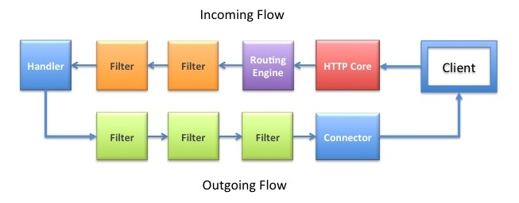

Extending via Pipeline Stages
The Appweb request processing scheme can be extended by creating custom pipeline stages. Stages come in three varieties: Handlers, Filters and Network Connectors.
Handlers respond to requests and generate response content, filters permute incoming or outgoing data and connectors transmit responses to the client.This document describes the pipeline stage interface and how to create Appweb handlers, filters and connectors. See the Configuring Pipeline Stages document for background.
Handlers
The core Appweb HTTP server cannot serve any requests or generate responses by itself. It relies on request handlers to generate response content for HTTP requests. The standard distribution of Appweb is itself comprised of seven different handlers which serve all the content provided by an Appweb server.
Creating a Handler
To create an Appweb handler, you need to call maCreateHandler and supply a unique handler name and flags that modify the behavior of the handler.
The following demonstrates the creation of a "sample" handler.
int maSimpleHandlerInit(Http *http, MprModule *module)
{
HttpStage *handler;
handler = httpCreateHandler(http, "simpleHandler", 0, module);
if (handler == 0) {
return MPR_ERR_CANT_CREATE;
}
/* Define function callbacks */
handler->match = matchSimple;
handler->open = openSimple;
handler->close = closeSimple;
handler->start = startSimple;
handler->process = processSimple;
handler->incomingData = incomingDataSimple;
handler->outgoingData = outgoingDataSimple;
handler->incomingService = incomingServiceSimple;
handler->outgoingService = outgoingServiceSimple;
/* Set handler private data */
handler->stageData = mprAllocObj(SimpleData, 0);
return 0;
}
Creating a Filter
Creating a filter is very similar to creating a handler. An MaStage object is created and initialized.
To create an Appweb filter, you need to call maCreateFilter and supply a unique filter name and flags that modify the behavior of the filter.
The following demonstrates the creation of a "compress" filter.
int maCompressFilterInit(Http *http, MprModule *module)
{
HttpStage *filter;
filter = httpCreateFilter(http, "compressFilter", 0, module);
if (filter == 0) {
return MPR_ERR_CANT_CREATE;
}
/* Define function callbacks */
filter->outgoingData = outgoingData;
filter->incomingData = incomingData;
return 0;
}
Creating a Connector
Creating a connector is similar to creating a handler. An MaStage object is created and initialized.
To create an Appweb connector, you need to call maCreateConnector and supply a unique connector name and flags that modify the behavior of the connector.
The following demonstrates the creation of a "turbo" connector.
int maTurboConnectorInit(Http *http, MprModule *module)
{
HttpStage *connector;
connector = httpCreateConnector(http, "turboConnector", 0, module);
if (connector == 0) {
return MPR_ERR_CANT_CREATE;
}
/* Define function callbacks */
connector->outgoingData = outgoingData;
connector->incomingData = incomingData;
return 0;
}
Pipeline Stages Callbacks
Pipeline stages can optionally provide callback functions which are run at various stages of the HTTP request processing. If they are not provided, a default implementation is used.
match
This callback is invoked to test if the current request should be serviced by the stage. It is invoked after the request headers are parsed by the Appweb core and before running the request pipeline. If the callback returns false, the stage is removed from the pipeline.
open
This callback is invoked to give the stage a chance to initialize for a given request and potentially allocate any request specific data or state. It is called at the start of request processing after the "match" callback.
close
The "close" callback is invoked to give stages an opportunity to release any request specific data. It is invoked just prior to dismantling the request pipeline.
start
The run callback is invoked to start processing the response for the client. If the request is a form with Content-Type of "application/x-www-form-urlencoded", the start callback is called after processing all input client data. Otherwise, it is called before any input data.
process
The run callback is invoked periodically after I/O events to allow the stage to pump data through the request pipeline.
incomingData
This callback is invoked to receive any incoming client data (typically POST or PUT data). It is called after the "open" callback and before the "run" callback.
outgoingData
The outgoingData callback is never called for handlers. Handlers generate data and send it downstream. Filters and connectors will have their outgoingData callback invoked to receive data from upstream. The outgoingData callback will be invoked after the "run" callback has been called for the handler.
Stage Data
Stages can allocate stage data and store it in the stage->data field. If the stage needs to store per-request data, it can store it in the stage's queue->data field which is unique for each request.
Stage flags
The create handler, filter and connector APIs take a flags word which modified the behavior of the stage. The flags can take the following values OR'd together
| Flag | Description |
|---|---|
| HTTP_STAGE_ALL | All the HTTP methods are supported. |
| HTTP_STAGE_DELETE | The stage supports the HTTP DELETE method. |
| HTTP_STAGE_PARAMS | The handler requires query and form data to be stored in the request params. |
| HTTP_STAGE_GET | The stage supports the HTTP GET method. |
| HTTP_STAGE_HEAD | The stage supports the HTTP HEAD method. |
| HTTP_STAGE_OPTIONS | The stage supports the HTTP OPTIONS method. |
| HTTP_STAGE_POST | The stage supports the HTTP POST method. |
| HTTP_STAGE_PUT | The stage supports the HTTP PUT method. |
| HTTP_STAGE_TRACE | The stage supports the HTTP TRACE method. |
Packaging as a Module
Stages are usually delivered as loadable modules. In this manner, users can decide for themselves if the functionality provided by the stage is needed or not. Stages can also be statically linked. See the Creating Modules section for more information about how to create a module.